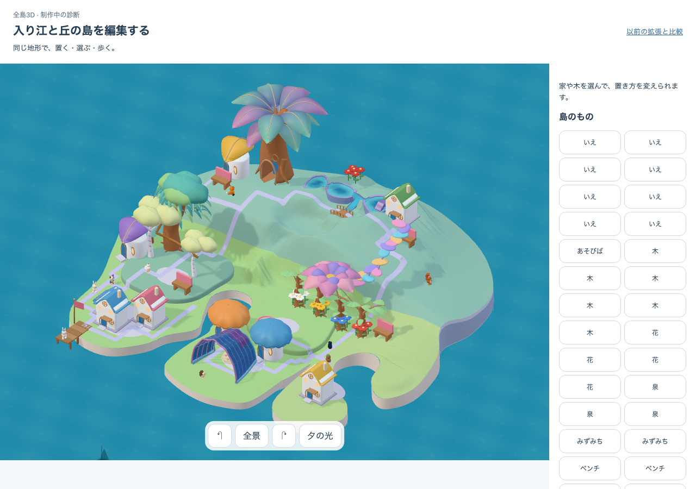
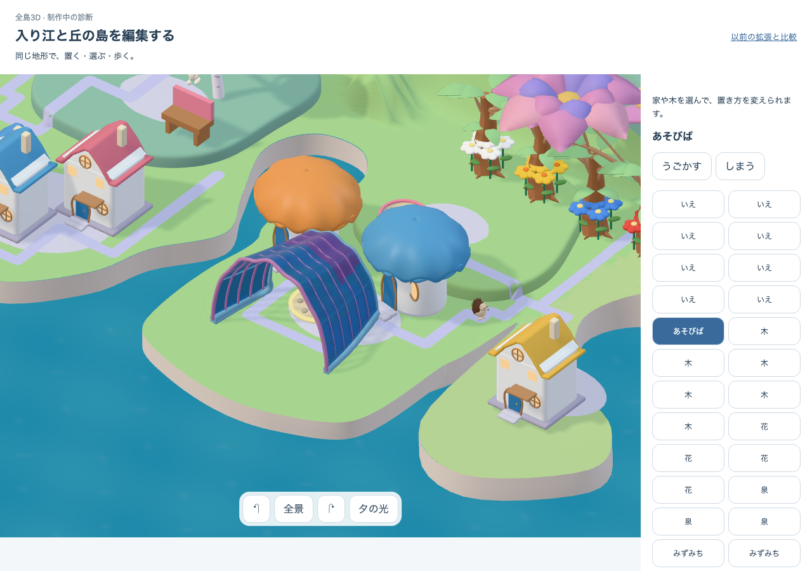

2026-10-12／実DEV authored-cove-c2／visual candidate native05-authored-cove-shore-v4／shell source native05-authored-cove-corner-v3。通常native flag=false、明示DEV route native=true・cove=true。合成32所有物・8軒、fresh DEV context／SWなし。まず1280×900の2画面を採用像と比較。全編集旅程は検査が主路を塞ぐ移動先を選び、接近検査でFAIL。修正旅程は次の固定候補で確認します。

